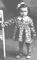
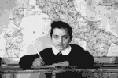
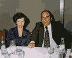

Para ampliar a foto clique sobre ela.



[imagem histórica não recuperada: ../MiniAnLeoBia87.gif (Leonida, Anna, Bianca, Quatrelle 1987)] [imagem histórica não recuperada: ../MiniMatrimGis.gif (1991)] [imagem histórica não recuperada: ../Mini%202003%20Asti%20gruppo.jpg (2003 riunione Asti)]
[imagem histórica não recuperada: ../Mini%202003%20Asti%20gruppo.jpg (2003 riunione Asti)]